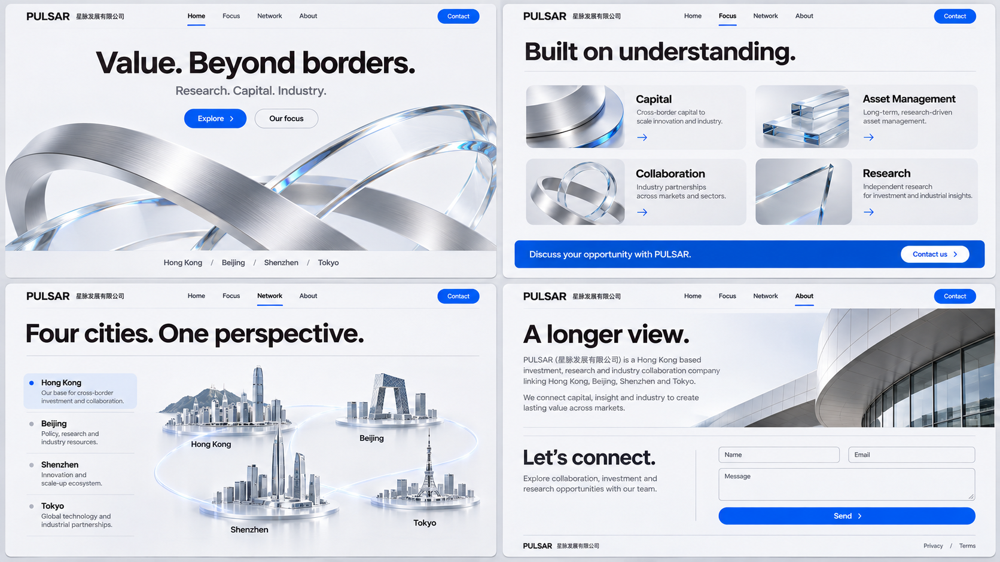

资本与投资
从研究出发，发现跨市场的长期价值。
一级市场投资 / 二级市场投资 / 战略性投资
从研究到投资，从产业到跨境合作。
以长期视角，探索不同市场之间的连接。

从研究出发，发现跨市场的长期价值。
一级市场投资 / 二级市场投资 / 战略性投资
以长期视角，连接资本与产业发展。
专项基金 / 独立子基金 / 跨境资产配置
让技术、资源与经验跨越市场边界。
中日产业合作 / 投后管理 / 企业价值创造
理解变化，为每一次连接建立认知。
市场研究 / 投资观点 / 产业趋势